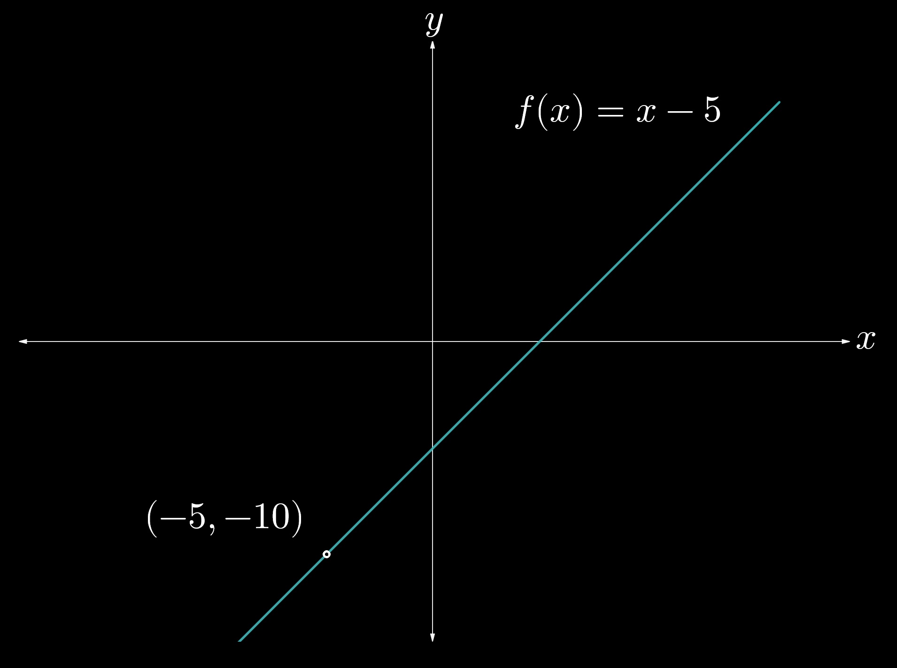

In section
1.1,
we introduced the notion of limits and briefly discussed how to evaluate them.
In this section, we will discuss how to evaluate limits in the forms
\(0/0\) and \(\infty/\infty\) using factoring, rationalization, and trigonometric identities.
We will also learn to evaluate the limits of rational functions at infinity.
Consider the rational function
\(f(x) = (x^2 - 4x + 9)(x^3 - 2)\).
How can we find \(\lim_{x \to \infty} f(x)\) ?
The intuitive process is to realize that, as \(x\) grows infinitely large, only the highest-degree terms are significant.
As \(x\) grows to infinity, \((x^2 - 4x + 9)/(x^3 - 2)\) becomes analogous to
\(x^2/x^3 = 1/x\),
which will decay to \(0\).
Algebraically, however, we can divide the numerator and denominator by the highest degree term of the rational expression,
\(x^3\) in this case. Doing so, we obtain
\[
\begin{aligned}
\lim_{x \to \infty} \frac{x^2 - 4x + 9}{x^3 - 2} &=
\lim_{x \to \infty} \frac{x^2 - 4x + 9}{x^3 - 2} \cdot \frac{1/x^3}{1/x^3} \\
&= \lim_{x \to \infty} \frac{1/x - 4/x^2 + 9/x^3}{1 - 2/x^3} \\
&= 0. \\
\end{aligned}
\]
This result is intuitive because we know that \(f(x)\) contains a horizontal asymptote at \(x = 0\).
Therefore, the end behavior is that as \(x\) approaches infinity, \(f(x)\) will approach \(0\), the horizontal asymptote.
We then conclude that the limit of a rational expression, as \(x\) approaches \(-\infty\) or \(+ \infty\), matches the function's end behavior.
LIMITS OF RATIONAL EXPRESSIONS
To determine the limit of a rational expression,
take the limit of the highest-degree terms in the numerator and denominator.
The resultant value is congruent with the horizontal asymptote of the function.
We consider only the highest-degree terms on the numerator and denominator.
Therefore,
\[
\begin{aligned}
\lim_{x \to \infty} \frac{3x^3 - 4x^2 + 16}{5x^3 + 8x - 2}
&= \lim_{x \to \infty} \frac{3x^3}{5x^3} \\
&= \lim_{x \to \infty} \frac{3}{5} \\
&= \bbox[border: 2pt solid white, 2px]{\frac{3}{5}}. \\
\end{aligned}
\]
We consider only the highest-degree terms on the numerator and denominator.
Therefore,
\[
\begin{aligned}
\lim_{x \to \infty} \frac{-8x^2 + \frac{3}{4}x^2 + 16}{5x - 2}
&= \lim_{x \to \infty} \frac{-8x^2}{5x} \\
&= \lim_{x \to \infty} \frac{-8x}{5} \\
&= - \infty \\
\end{aligned}
\]
Because the limit is unbounded, we conclude that it does not exist.
We consider only the highest-degree terms on the numerator and denominator.
Therefore,
\[
\begin{aligned}
\lim_{x \to -\infty} \frac{8 + 3x^2 - x^9}{10x^9}
&= \lim_{x \to -\infty} \frac{-x^9}{10x^9} \\
&= \lim_{x \to -\infty} \frac{-1}{10} \\
&= \bbox[border: 2pt solid white, 2px]{-\frac{1}{10}}. \\
\end{aligned}
\]
Let's now discuss more types of limits in the form \(0/0\) and \(\infty/\infty\), which are indeterminate forms.
It is important to understand, however, that a limit in the form \(k/0\), where \(k \ne 0\), does not exist.
INDETERMINATE FORMS
Limits in the forms \(\displaystyle \frac{0}{0}\) and \(\displaystyle \frac{\infty}{\infty}\) are indeterminate.
Limits in the form \(\displaystyle \frac{k}{0}\), where \(k \ne 0\), do not exist.
Consider, for example, the function \(f(x) = (x^2 - 25)/(x + 5)\).
What is \(\lim_{x \to -5} f(x)\) ?
When we try to perform a direct substitution, we obtain the form \(0/0\), which is indeterminate.
However, we notice that the numerator \(f(x)\) is a difference of squares and can be factored as \((x + 5)(x - 5)\).
Thus, we can rewrite the limit as
\[
\begin{aligned}
\lim_{x \to -5} f(x) &= \lim_{x \to -5} \frac{x^2 - 25}{x + 5} \\
&= \lim_{x \to -5} \frac{(x + 5)(x - 5)}{x + 5} \\
&= \lim_{x \to -5} (x - 5) \\
&= -10.
\end{aligned}
\]

Fig. 1.2-1.
The function \(y = (x^2 - 25)/(x + 5)\) is equivalent to \(y = x - 5\) with a hole at the point \((-5, -10)\).
The function \(f(x) = (x^2 - 25)/(x + 5)\) is equivalent to the line \(y = x - 5\) with a hole at the point \((-5, -10)\),
as shown in Fig. 1-2.1. This example demonstrates that, for a case in which direct substitution yields the indeterminate form \(0/0\),
you should be aware of any factors that cancel out.
After canceling out any common factors in the numerator and denominator, attempt direct substitution again.
As a second example, consider the function \(g(x) = (\sqrt{2x + 5} - 1)/(x + 2)\).
What is \(\lim_{x \to -2} g(x)\) ?
We notice that, upon attempting direct substitution by plugging in \(x = -2\), we are left in a \(0/0\) indeterminate form.
However, we should remain observant—let's
try multiplying the numerator and denominator by the conjugate of \((\sqrt{2x + 5} - 1)\),
which is \((\sqrt{2x + 5} + 1)\). Doing so yields
\[
\begin{aligned}
g(x) &= \frac{\sqrt{2x + 5} - 1}{x + 2} \\
&= \frac{\sqrt{2x + 5} - 1}{x + 2} \cdot \frac{\sqrt{2x + 5} + 1}{\sqrt{2x + 5} + 1} \\
&= \frac{(2x + 5) - 1}{(x + 2) \left(\sqrt{2x + 5} + 1\right)} \\
&= \frac{2(x + 2)}{(x + 2) \left(\sqrt{2x + 5} + 1\right)} \\
&= \frac{2}{\sqrt{2x + 5} + 1}, x \ne -2. \\
\end{aligned}
\]
We can now take the limit, as \(x\) approaches \(-2\), of \(2/(\sqrt{2x + 5} + 1)\).
We then get
\[
\begin{aligned}
\lim_{x \to -2} \frac{2}{\sqrt{2x + 5} + 1} &= \frac{2}{\sqrt{2(-2) + 5} + 1} \\
&= \frac{2}{\sqrt{1} + 1} \\
&= \bbox[border: 2pt solid white, 2px]{1}.
\end{aligned}
\]
This technique of rationalizing permitted us to create a common factor to cancel out.
After doing so, we performed direct substitution and obtained the limit.
This rationalization created a new function that had a hole at \(x = -2\), which is analogous to the graph in Fig. 1.2.1.
Example 2
For each of the following, evaluate the limit or state that it does not exist.
When we attempt to perform direct substitution, we obtain a \(0/0\) indeterminate form.
However, the numerator is a difference of squares, so we can factor it and rewrite the limit as
\[
\begin{aligned}
\lim_{x \to -2} \frac{(x + 2)(x - 2)}{x + 2}
&= \lim_{x \to -2} (x - 2) \\
&= \bbox[border: 2pt solid white, 2px]{4}. \\
\end{aligned}
\]
This limit is in the indeterminate form \(0/0\).
We see that the numerator is a difference of cubes and can thus be rewritten as
\((x - 4)(x^2 + 8x + 16)\).
Thus,
\[
\begin{aligned}
\lim_{x \to 4} \frac{(x^3 - 64)}{x - 4}
&= \lim_{x \to 4} \frac{(x - 4)(x^2 + 8x + 16)}{x - 4} \\
&= \lim_{x \to 4} (x^2 + 8x + 16) \\
&= (4)^2 + 8(4) + 16 \\
&= \bbox[border: 2pt solid white, 2px]{64}. \\
\end{aligned}
\]
This limit is in the indeterminate form \(0/0\).
We observe that there is a radical in the numerator, so let's attempt to rationalize.
We can do so by multiplying the numerator and denominator by \((\sqrt{4x - 5} + 2)\).
We then get
\[
\begin{aligned}
\lim_{x \to 9/4} \frac{\sqrt{4x - 5} - 2}{16x - 36}
&= \lim_{x \to 9/4} \frac{\sqrt{4x - 5} - 2}{16x - 36} \cdot \frac{\sqrt{4x - 5} + 2}{\sqrt{4x - 5} + 2} \\
&= \lim_{x \to 9/4} \frac{(4x - 5) - 4}{(16x - 36)(\sqrt{4x - 5} + 2) } \\
&= \lim_{x \to 9/4} \frac{4x - 9}{4(4x - 9)(\sqrt{4x - 5} + 2)} \\
&= \lim_{x \to 9/4} \frac{1}{4(\sqrt{4x - 5} + 2)} \\
&= \frac{1}{4 \left(\sqrt{4\left(\frac{9}{4}\right) - 5} + 2 \right)} \\
&= \bbox[border: 2pt solid white, 2px]{\frac{1}{16}}. \\
\end{aligned}
\]
This limit is in the indeterminate form \(0/0\).
We observe that there is a radical in the denominator, which we will attempt to rationalize.
The conjugate of the denominator is \((\sqrt{x - 8} - 1)\).
Therefore, we will multiply the numerator and denominator by \((\sqrt{x - 8} - 1)\) to get
\[
\begin{aligned}
\lim_{x \to 9} \frac{3x - 27}{\sqrt{x - 8} + 1}
&= \lim_{x \to 9} \frac{3x - 27}{\sqrt{x - 8} + 1} \cdot \frac{\sqrt{x - 8} - 1}{\sqrt{x - 8} - 1} \\
&= \lim_{x \to 9} \frac{(3x - 27)(\sqrt{x - 8} - 1)}{(x - 8) - 1} \\
&= \lim_{x \to 9} \frac{3(x - 9)(\sqrt{x - 8} - 1)}{x - 9} \\
&= \lim_{x \to 9} 3 \left(\sqrt{x - 8} - 1\right) \\
&= 3 \left(\sqrt{9 - 8} - 1\right) \\
&= \bbox[border: 2pt solid white, 2px]{0}. \\
\end{aligned}
\]
The next series of indeterminate limits we will analyze involve trigonometric functions.
Recall the following trigonometric identities:
\[
\begin{aligned}
1 &= \sin^2(x) + \cos^2(x) \\
\sin(2x) &= 2 \sin(x) \cos(x) \\
\cos(2x) &= \cos^2(x) - \sin^2(x). \\
\end{aligned}
\]
We will reference these identities for any indeterminate limits involving trigonometric functions.
Example 3
For each of the following, evaluate the limit or state that it does not exist.
The limit is in a \(0/0\) indeterminate form.
We can rewrite \(\sin(2x)\) as \(2 \sin(x) \cos(x)\).
We then obtain
\[
\begin{aligned}
\lim_{x \to \pi/2} \frac{\sin(2x)}{\cos(x)}
&= \lim_{x \to \pi/2} \frac{2 \sin(x) \cos(x)}{\cos(x)} \\
&= \lim_{x \to \pi/2} 2 \sin(x) \\
&= 2 \sin \left(\frac{\pi}{2}\right) \\
&= \bbox[border: 2pt solid white, 2px]{2}.
\end{aligned}
\]
Because we are in a \(0/0\) indeterminate form, we must be resourceful.
One way to manipulate this limit is to multiply the numerator and denominator by \((1 + \cos(x))\),
after which we get
\[
\begin{aligned}
\lim_{x \to 0} \frac{1 - \cos(x)}{3 \sin(x)}
&= \lim_{x \to 0} \frac{1 - \cos(x)}{3 \sin(x)} \cdot \frac{1 + \cos(x)}{1 + \cos(x)} \\
&= \lim_{x \to 0} \frac{1 - \cos^2(x)}{3 \sin(x)(1 + \cos(x))} \\
&= \lim_{x \to 0} \frac{\sin^2(x)}{3 \sin(x)(1 + \cos(x))} \\
&= \lim_{x \to 0} \frac{\sin(x)}{3 (1 + \cos(x))} \\
&= \frac{\sin(0)}{3\left(1 + \cos(0)\right)} \\
&= \bbox[border: 2pt solid white, 2px]{0}.
\end{aligned}
\]
We should now be comfortable with recognizing indeterminate forms.
The examples in this section showcase methods for algebraically manipulating indeterminate limits
into a form for which direct substitution yields a definite answer.
Remain vigilant for any factors that cancel out—this is the common goal of the algebraic manipulations featured in this section.
SECTION SUMMARY
A limit in the form \(\displaystyle \frac{0}{0}\) or \(\displaystyle \frac{\infty}{ \infty}\)
is indeterminate.
However, a limit in the form \(\displaystyle \frac{k}{0}\), where \(k \ne 0\), does not exist.
To find a limit of a rational expression at infinity, take the limit of the highest-degree terms only—they
are the most significant. The result agrees with the end behavior of the function.
Try to algebraically manipulate an indeterminate limit into a form for which direct substitution yields a definite value.
If you notice a fraction with a radical in an indeterminate limit,
try to rationalize it by multiplying the numerator and denominator by the conjugate of the radical expression.
Utilize trigonometric identities to simplify indeterminate limits involving trigonometric functions.
Remember the Pythagorean identity as well as the double angle identities for sine and cosine,
\(\sin(2x) = 2 \sin(x) \cos(x)\) and \(\cos(2x) = \cos^2(x) - \sin^2(x)\).